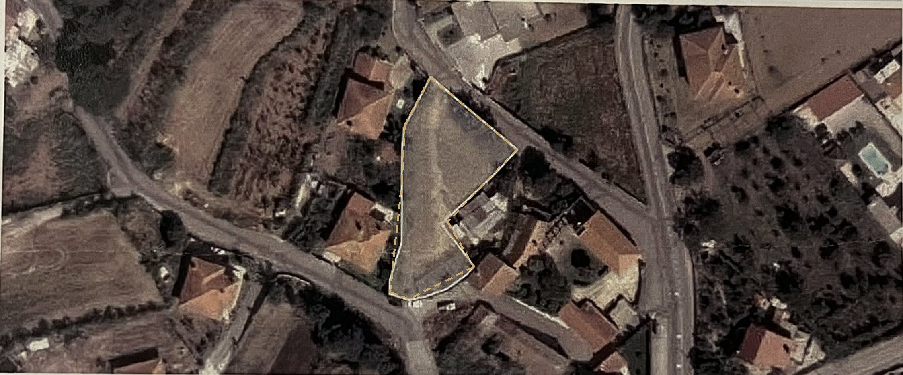

DisponívelFotografia aérea · limite do terreno a tracejado
Terreno urbano · Vale (São Cosme) · Famalicão
Terreno para duas moradias
1 263 m² em zona residencial consolidada, com duas frentes de rua. Solo urbano no PDM, sem RAN nem REN.
1 263 m²Área do terreno
≈ 500 m²Área de construção possível
2Moradias (estudo)
Preço125 000 €
Ref. VSC-1387
Ref. VSC-1387 · 02/05
O terreno
Uma parcela com duas frentes, rodeada de moradias

O terreno fica no interior de um quarteirão de moradias unifamiliares, entre duas ruas. As duas frentes permitem dividi-lo em dois lotes, cada um com acesso próprio, a poucos minutos do centro de Vila Nova de Famalicão.
Localização
Vale (São Cosme), Telhado e Portela, V. N. de Famalicão
Área
1 263 m² (representação gráfica BUPi)
Classificação no PDM
Solo urbano — Espaço Urbano de Baixa Densidade
Condicionantes
Sem RAN nem REN
Frentes de rua
Duas (≈ 33 m e ≈ 27 m)
Topografia
Declive médio ≈ 15 %, a descer para sudeste
Frentes e declive estimados a partir da representação gráfica e da cartografia oficial; a confirmar por levantamento topográfico.
Ref. VSC-1387 · 03/05
Potencial construtivo
Duas moradias de dois pisos, cada uma no seu lote
UsosHabitação; comércio e serviços de proximidade
TipologiasMoradias isoladas, geminadas ou bifamiliares
Índice (loteamento ou destaque)0,40 → ≈ 505 m² de construção
Altura máxima7 m · 2 pisos acima do solo
O estudo divide o terreno em dois lotes, de 658 m² e 605 m², com uma moradia de 10 × 12,5 m e outra de 8 × 14 m: cerca de 474 m² de construção no total. O declive permite garagem ou cave meio enterrada do lado da rua mais alta.
Estudo preliminar, com afastamentos de 5 m à via e 3 m às estremas, a confirmar. PDM de Vila Nova de Famalicão, art. 74.º a 76.º. O PDM está em revisão: confirmar os parâmetros na Câmara.
Ref. VSC-1387 · 04/05
Mercado
Um preço alinhado com a freguesia
A habitação em Famalicão valorizou cerca de 25 % no último ano, segundo o INE. Na mesma freguesia, os terrenos para moradia anunciam-se entre 90 e 140 €/m², e os lotes pequenos chegam aos 137 €/m².
Terrenos anunciados na freguesia
Área
Preço
€/m²
Lote para moradia individual
579 m²
79 500 €
137
Terreno para moradias individuais
1 875 m²
328 000 €
175
Terreno, Trav. de Santo António
1 485 m²
150 000 €
101
Terreno de construção
2 700 m²
250 000 €
93
Por m² de terreno99 €Abaixo dos lotes pequenos da freguesia.
Por lote (2 moradias)≈ 62 500 €Contra 79 500 € por um lote individual.
Preço125 000 €≈ 250 € por m² de construção possível.
Comparáveis: preços pedidos em anúncios públicos, novembro de 2026. Estatística: INE.
Ref. VSC-1387 · 05/05
Próximos passos
Do primeiro contacto à escritura
01
Visita e documentaçãoVisita ao local e entrega da caderneta predial, da certidão permanente e da planta do prédio.
02
Pedido de Informação PréviaRecomendamos pedir à Câmara um PIP antes da compra: confirma por escrito o que pode construir.
03
Contrato-promessaCPCV com sinal, prazos e condições acordadas entre as partes.
04
Escritura e registoEscritura, pagamento de IMT e Imposto do Selo e registo na Conservatória.
Marque a sua visita+351 913 440 800 · paineltematico@gmail.com
Documento informativo, sem valor contratual. Áreas e parâmetros urbanísticos indicativos, a confirmar junto da Câmara Municipal e por levantamento topográfico. Painel Temático, Lda · Braga.